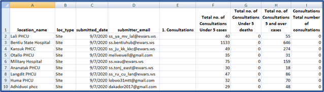
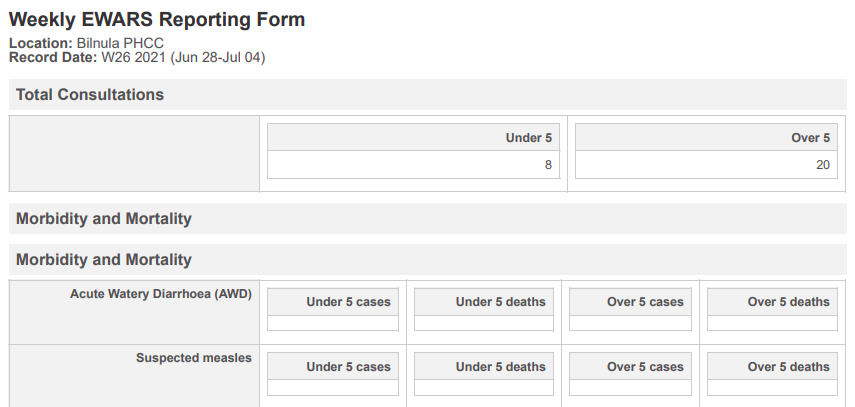
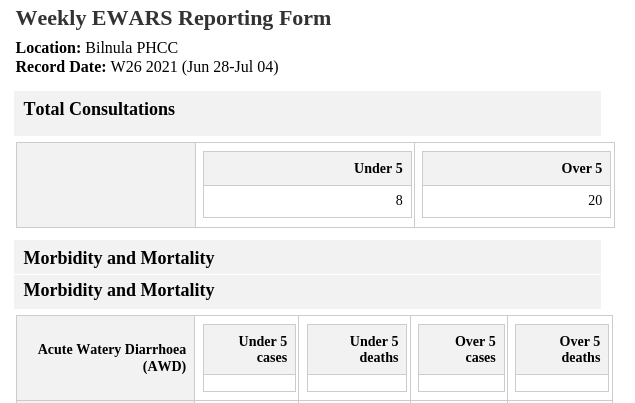
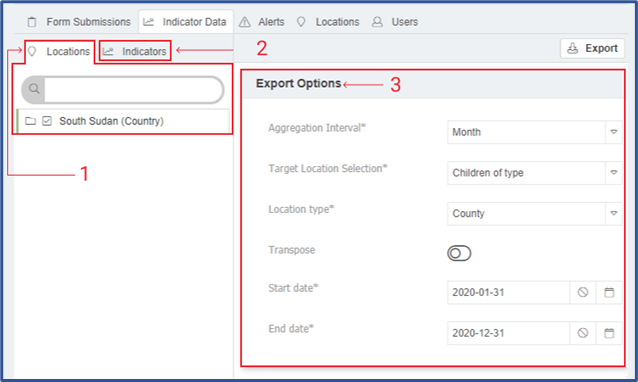
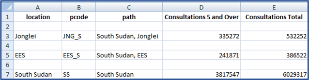
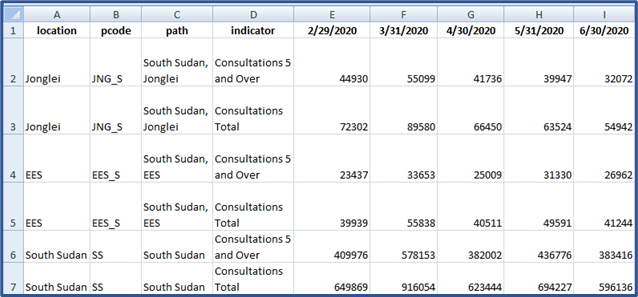
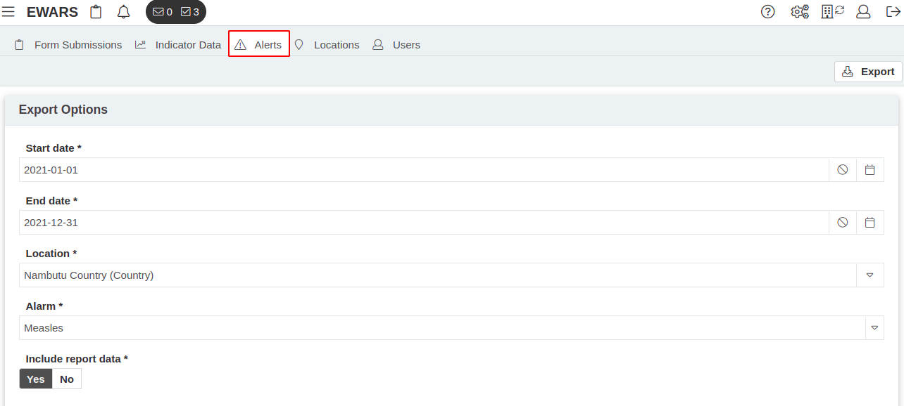
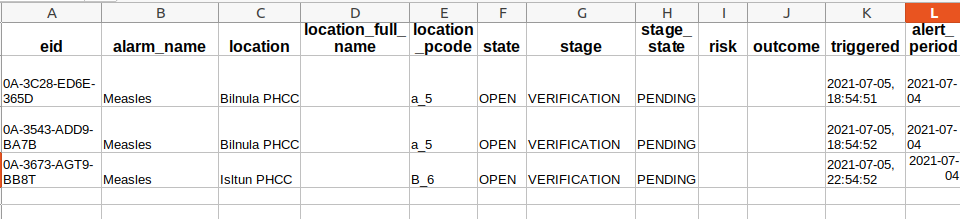
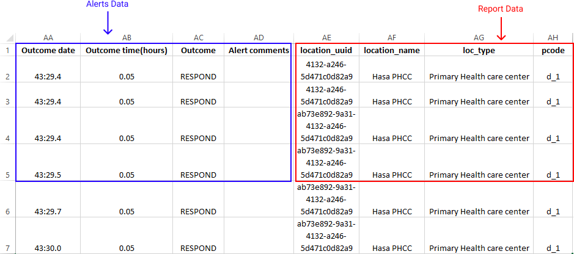
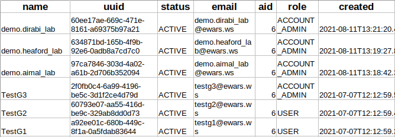

Chapter 23. Export
The Export feature facilitates the export of data from the Early Warning, Alert and Response System (EWARS) in different formats, including .zip, .csv, .doc and .pdf. Data related to the forms – such as reporting forms, alerts, user data, indicator data and locations data – can be exported with ease. If multiple individual reports are submitted, they can be downloaded as a single merged PDF file for easier perusal. Through this method, the data collected can be easily shared for multifaceted in-depth analysis, aiding both research and monitoring/tracking.
Table 23.1 summarizes data that can be exported and the supported formats.
Table 23.1. Data that can be exported and supported formats
| Exporting data format | ||||
|---|---|---|---|---|
| Data type | Format: .zip | Format: .csv | Format: .doc | Format: .pdf |
| Form Submissions | ✓ | ✓ | ✓ | |
| Indicators | ✓ | |||
| Alerts | ✓ | |||
| Locations | ✓ | |||
| Users | ✓ |
23.1 Exporting form submissions
Form submissions can be filtered and selected for export, based on the form, location and date. The exported file formats can be .zip, .pdf or .doc.
23.1.1 Exporting as a .zip file
Select Menu > Export > click on the Form Submissions tab. Populate the Start date, End date, Location and Form fields. Click on , and a .zip file is downloaded and can be viewed in Excel, as shown below after it is extracted:

Graphical user interface, application, table, Excel Description automatically generated
23.1.2 Exporting as a .pdf file
By selecting the PDF option, you can export all individual reports submitted within the specified start date, end date and location as a .pdf file. For example, if there are 200 submitted reports meeting your criteria, they are downloaded as a merged PDF.
- Select Menu > Export > click on the Form Submissions tab. Populate the Start date, End date, Location and Form fields. Click on , and a .pdf file is downloaded and can be viewed independently. A sample view is given below:

23.1.3 Exporting as a .doc file
By selecting the .doc option, you can export all individual reports submitted within the specified start date, end date, and location as a Microsoft Word file.
- Select Menu > Export > click on the Form Submissions tab. Populate the Start date, End date, Location and Form fields. Click on , and a .doc file is downloaded and can be viewed independently. A sample view is given below:

23.2 Exporting indicator data
You can export indicator data as a comma-separated values (CSV) file. This feature facilitates exporting multiple indicators data for multiple locations in a single CSV file.
- Select Menu > Export. Click on the Indicator Data tab, and the screen below appears:

In the screenshot above, the Locations tab is highlighted as 1, the Indicators tab as 2 and the Export Options fields as 3.
To export the data as a CSV file, follow the steps below.
- Select the required locations from the Locations tab (1), select the required indicators from the Indicators tab (2) and populate the Export Options fields as follows.
Set Aggregation Interval as day, week, month or year, as appropriate. This will aggregate and download the data according to the selected interval.
Set Target Location Selection as Children of type. This enables you to select locations according to location type – for example, to select all provinces of a country, you can select Country from the Locations tab (1) and select Provinces as the Location type.
Select the Start date and End date in the calendar to specify the date range for the data to be exported.
Aggregation interval: Choose among day, week, month or year, as appropriate. It will aggregate and download the data as per the selected aggregation interval.
Transpose options: Set as on or off
Click on to start export and the screen below appears:

Graphical user interface, application, table Description automatically generated
The example CSV file column headings are location, place code (PCODE), path, Indicator 1, Indicator 2, Indicator 3 and so on.
The CSV file has a data row for each selected location. For example, if you selected three locations, the CSV file has three data rows.
Or click on the Transpose toggle icon to set as off, meaning that indicator data are summed up for each aggregation interval – for example, aggregated data are presented for the state for the entire selected period.
Click on to start export and the screen below appears:

The example CSV column headings are location, PCODE, path, Indicator, Interval 1, Interval 2, Interval 3 and so on.
The CSV file has a data row for each combination of the selected locations and indicators. For example, if you selected three locations and two indicators, the CSV file has six (3 x 2) data rows.
23.3 Exporting alerts data
Alerts data can be exported as a .zip file. You can export alerts data by selecting alarm, location and date period, and enabling/disabling report data.

Select Menu > Export. Click on the Alerts tab, and the screen below appears:Populate the Start date, End date, Location and Alarm fields.
At this point, you have two options to set the information you want to export.
Either set Include report data as No, and the exported CSV file does not include the reports that triggered the alert.
Click on , and a .zip file is downloaded > extract it.
The extracted .zip file folder has a file named Alerts.csv. This includes full information on each alert, along with alert actions and events specified by time duration and location; these can be located by alert electronic identification (EID).
Some of the columns of Alerts.csv file are shown below:

Or set Include report data as Yes, and the exported CSV file includes the reports that triggered the alert.
Click on , and a .zip file is downloaded > extract it.
The extracted .zip file folder has a CSV file that includes all the columns, as shown in the screenshot above, and all the reports and their data, which triggered this alert.
The screenshot below shows some of the columns contained in the files and their data, along with the alert data:

23.4 Exporting locations data
The locations in the system can be exported as a CSV file.
Select Menu > Export. Click on the Locations tab.
Populate the Location, Location type and Location status fields. Click on , and a CSV file is downloaded.
 Note: location type is optional. Select the type of location to export the related data. All child locations under the selected location are exported in the event of no selection under the location type. Note: location type is optional. Select the type of location to export the related data. All child locations under the selected location are exported in the event of no selection under the location type. |
The extracted CSV file has the following location data columns, including the universally unique identifier (UUID) generated by the system:
| UUID | name | PCODE | parent_id | lineage | Status |
|---|---|---|---|---|---|
| geometry_type | groups | location_type | Uncategorized | Health Facility | Province |
| Country |
23.5 Exporting user data
User data can be exported as a CSV file, based on users’ creation date, status and role.
Select Menu > Export. Click on the Users tab.
Populate the user Start date, End date, Status and Role fields. Click on , and a CSV file is downloaded.
| Note: user status and role are optional. Select the relevant status (active or inactive user) and role (Reporting User, Geographical Administrator or Account Administrator) to export the related data. All users created in the date range are exported in the event of no selection of any particular user status and role. |
The extracted CSV file has the following user data columns:

The following chapter explores the Short Message Service (SMS) reporting and teams features. These allow you to send reports via the SMS function in environments where data connectivity is weak.